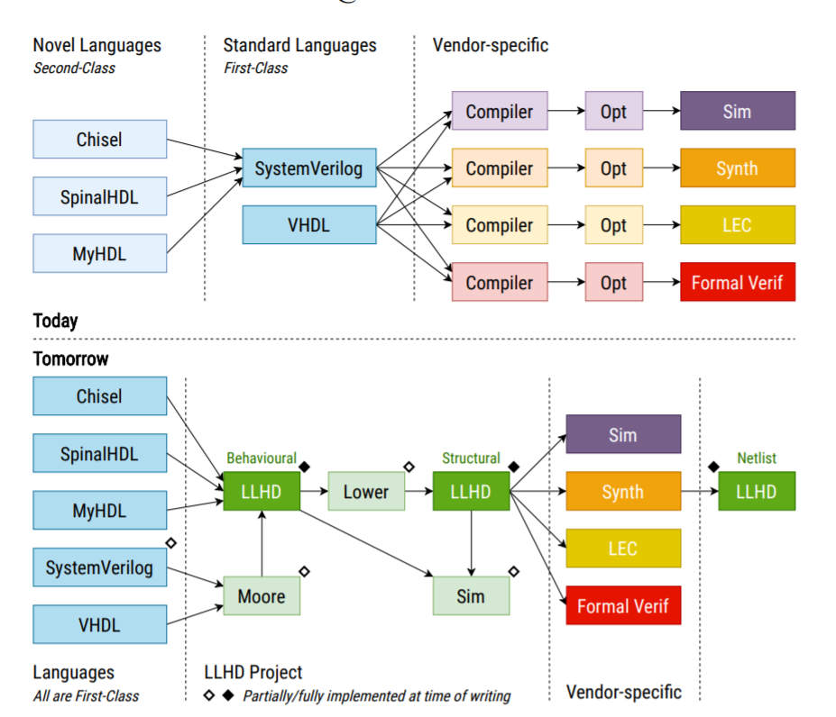

Verilatorの内部構造解析
～Verilator解析を通じて感じる「最近面白そうと思っている技術」～
- 発表者：msyksphinz (FPGA開発日記著者)
- @msyksphinz_dev
- https://msyksphinz.hatenablog.com
発表者について
- 好きなコト：コンピュータアーキテクチャ・低レイヤプログラミング
- MIPS (趣味の命令セットシミュレータ作りはMIPSから始まった)
- ARM (勉強中...)
-
RISC-V (一応、黎明期からのウォッチャー)
-
ハードウェア開発が一応本業
- 汎用CPU・アクセラレータ、など...
- 使えるハードウェア記述言語 : Verilog, SystemVerilog (UVM除く), Chisel
- 学生の時に最初に勉強したHDLはVHDL (もう忘れた)
-
学生の頃はXilinxのSpartan-3 にMIPSを自作しては載せて遊んでいた(そういう世代)。
-
低レイヤプログラミング
- 仕事は最初汎用CPUの性能解析と検証から始めたので、低レイヤプログラミングはある程度できる(つもり)
- QEMU、LLVMあたりが好き
- 新しいISAを覚えるときは、まず命令セットシミュレータを作るところから！
本日のお題：Verilator
発表者がVerilatorを調べ始めたきっかけ：
- Verilatorを使って巨大な自作CPUコンパイルすると遅いな。
- ひどいときは一晩掛かる。
- なんでこんなに遅いんだろう？
- Verilatorの内部構造調べるか。
VerilatorによるRTLのコンパイル・シミュレーションの基本的なフロー
これはコンパイル型RTLシミュレータならば（割と）一般的なフロー（だと思う）。
sv=>inputoutput: SystemVerilog
verilator=>subroutine: Verilator
cppfile=>inputoutput: 変換後C++ファイル
clangcompile=>subroutine: コンパイル
bin=>inputoutput: 実行ファイル
sv(right)->verilator(right)->cppfile(right)->clangcompile(right)->bin
Verilatorが注目を浴びる理由(私がVerilatorを使わざるを得ない理由)
EDAベンダはクソ RTLのコンパイラ・シミュレータなどなど高額のライセンス料金で吹っ掛けてくる。 不具合だらけのツールを高額で売り付けてサポートで金をとる。
一回EDAベンダは全部滅びればいいと思っている。私の将来の夢はEDAベンダを全部潰すこと。
... というのは冗談として、仕事以外で（つまり無償で）デジタルハードウェアエンジニアが使うことができるRTLシミュレーションツールって、一応列挙すると、
- Model Sim Intel Starter Edition
- Vivado Simulator
- Verilator
くらいではないかと思っている。それぞれの使ってみた感想を以下に示す。
- ModelSim Intel Starter Edition
- メリット：4値が使える。波形デバッガが（まあまあ）使える
- デメリット：64ビットバイナリはQuestaSimのみ提供（有償）であり、DPI-Cなどで64ビットバイナリ（CPU設計の場合はISSやlibelfなど）が使えず、まともなデバッガとして使えない
- Vivado Simulator
- メリット：4値が使える。64ビットバイナリは使える。DPI-Cも64ビットバイナリが使える。UVMも（制限があるが）使える！
- デメリット：波形デバッガが死ぬほど重たく、使いにくい
- Verilator
- メリット：64ビットバイナリが使える。DPI-Cも64ビットバイナリが使える。シミュレーションが速い
- デメリット：GTKWaveは（慣れれば）使い物になる。デザインコンパイル速度が遅い
... という訳で、4値を使った込み入ったデバッグをしたいときはModelSim Starter Edition、機能実装やリグレッションテストはVerilatorを使っている、という状況。
VerilatorのSystemVerilogコンパイルとシミュレーション
一つのVerilogファイルをコンパイルするとどれだけのファイルが生成される？
add_ff.sv
module add_ff
(
input logic i_clk,
input logic i_reset_n,
input logic [31:0] in_a,
input logic [31:0] in_b,
output logic [31:0] out_c
);
always_ff @ (posedge i_clk, negedge i_reset_n) begin
if (!i_reset_n) begin
out_c <= 32'h0;
end else begin
out_c <= in_a + in_b;
end
end
endmodule // add_ff
$ verilator --cc --exe add_ff.sv
.
|-- add_ff.sv
`-- obj_dir
|-- Vadd_ff.cpp
|-- Vadd_ff.h
|-- Vadd_ff.mk
|-- Vadd_ff__Slow.cpp
|-- Vadd_ff__Syms.cpp
|-- Vadd_ff__Syms.h
|-- Vadd_ff__ver.d
|-- Vadd_ff__verFiles.dat
`-- Vadd_ff_classes.mk
Vadd_ff.h:add_ffのメインクラスとなるC++クラスが宣言されているVadd_ff.cpp:add_ffの実装コードVadd_ff.mk: 生成されたC++コードをコンパイルするためのMakefileVadd_ff_Slow.cpp: 頻繁に実行されることのないルーチンが生成される。コンストラクタ、デストラクタなど。Vadd_ff__ver.d: 依存関係ファイル（Automakeとかで使うやつ？）Vadd_ff_verFiles.dat: タイムススタンプVadd_ff_Syms.{h,cpp}: シンボルテーブル。ほとんどのケースでは使わない？
--debugオプションで生成される回路構成ツリー
--debugオプションをつけると、Verilatorは大量の回路構造ツリーを生成する。Graphviz用の.dotファイルも同時に生成されている。
# --debugオプションを付けると大量のデバッグ情報を生成する
$ verilator --debug --cc --exe add_ff.sv
$ ls obj_dir/*.tree
以下のような中間デバッグファイルが出力される。dotファイルもあるので内部構造を観察することができる。
# 生成されたdotファイルをPNGファイルに変換して観察する。
$ dot -Tpng Vadd_ff_065_orderg_done.dot -o Vadd_ff_065_orderg_done.png
Verilatorは受け取ったSystemVerilogファイルをParseし、構造を変えながら最適化し、最終的にC++ファイルを出力する。
--debugオプションを付属すると、どのようなPASSが適用されるのかを確認することができる。
以下のような大量のPASSがASTに対して適用され、回路構造を等価に保ちつつC++ファイルを生成できるように変化させている。 ⇒ VerilatorはSystemVerilogエミュレーションにおけるLLVMのようだ（筆者の感想）
- V3LinkDot.h:37: linkDotPrimary:
- V3LinkJump.cpp:292: linkJump:
- V3LinkInc.cpp:248: linkIncrements:
- V3Param.cpp:1202: param:
- V3LinkDot.h:42: linkDotParamed:
- V3Dead.cpp:465: deadifyModules:
- V3Width.cpp:6163: width:
- V3Width.cpp:6206: widthCommit:
- V3Const.cpp:2659: constifyAllLive:
- V3Undriven.cpp:462: undrivenAll:
- V3AssertPre.cpp:207:assertPreAll:
- V3Assert.cpp:474: assertAll:
- V3LinkLevel.cpp:130:wrapTop:
- V3Const.cpp:2632: constifyAllLint:
- V3SplitVar.cpp:1257:splitVariable:
- V3Inst.cpp:610: dearrayAll:
- V3LinkDot.h:47: linkDotArrayed:
- V3Begin.cpp:293: debeginAll:
- V3Tristate.cpp:1420:tristateAll:
- V3Unknown.cpp:488: unknownAll:
- V3Inline.cpp:712: inlineAll:
- V3LinkDot.h:47: linkDotArrayed:
- V3Const.cpp:2669: constifyAll:
- V3Dead.cpp:471: deadifyDTypes:
- V3Inst.cpp:604: instAll:
- V3Const.cpp:2669: constifyAll:
- V3Scope.cpp:404: scopeAll:
- V3LinkDot.h:52: linkDotScope:
- V3Class.cpp:156: classAll:
...
どのように回路をシミュレーションするか？
上記のSystemVerilogデザインをシミュレーションする場合、以下のようなC++コードによりシミュレーションを行うことになる。
// DUTをインスタンス化する
Vadd_ff *dut = new Vadd_ff();
int cycle = 0;
while (time_counter < 1000) {
dut->i_clk = !dut->i_clk; // Toggle clock
if (!dut->i_clk) {
dut->in_a = dut->in_a + 1;
dut->in_b = dut->in_b + 1;
}
// DUTの評価：ここがVerilatorのシミュレーションのキモとなるところ
dut->eval();
tfp->dump(time_counter);
time_counter++;
}
dut->eval()の中身は？
Vadd_ff.h：Vadd_ffクラスにはeval()メソッドが生成されている
/// Evaluate the model. Application must call when inputs change.
void eval() { eval_step(); }
/// Evaluate when calling multiple units/models per time step.
void eval_step();
Vadd_ff.cpp：eval()はeval_step()を呼ぶ。eval_step()の中身。
組み合わせ回路・順序回路の評価はprivateなメソッド_eval()で行われていると考えて良い。
void Vadd_ff::eval_step() {
/* ... 中略 ...*/
// Initialize
if (VL_UNLIKELY(!vlSymsp->__Vm_didInit)) _eval_initial_loop(vlSymsp);
// Evaluate till stable
int __VclockLoop = 0;
QData __Vchange = 1;
// コメント：以下のループは、回路が安定するまで(__Vchangeが0になるまで)続けられる。
do {
VL_DEBUG_IF(VL_DBG_MSGF("+ Clock loop\n"););
// コメント：これが回路の評価の実体
_eval(vlSymsp);
if (VL_UNLIKELY(++__VclockLoop > 100)) {
/* ... 中略 ...*/
} else {
/* ... 中略 ... */
__Vchange = _change_request(vlSymsp);
}
} while (VL_UNLIKELY(__Vchange));
}
_eval()の内部：前のステートとclock()が変われば回路の評価を行う。
void Vadd_ff::_eval(Vadd_ff__Syms* __restrict vlSymsp) {
VL_DEBUG_IF(VL_DBG_MSGF("+ Vadd_ff::_eval\n"); );
Vadd_ff* const __restrict vlTOPp VL_ATTR_UNUSED = vlSymsp->TOPp;
// Body
// コメント：クロックの変化をこれで検出している。
// リセット状態ではないことをこれで検出している。
if ((((IData)(vlTOPp->i_clk) & (~ (IData)(vlTOPp->__Vclklast__TOP__i_clk)))
| ((~ (IData)(vlTOPp->i_reset_n)) & (IData)(vlTOPp->__Vclklast__TOP__i_reset_n)))) {
// _sequent__TOP__1()内部で回路の評価。
vlTOPp->_sequent__TOP__1(vlSymsp);
}
// Final
// clkとresetの過去の状態を更新。次のステート変更のために使用する。
vlTOPp->__Vclklast__TOP__i_clk = vlTOPp->i_clk;
vlTOPp->__Vclklast__TOP__i_reset_n = vlTOPp->i_reset_n;
}
sequent_TOP__1()の中身は以下のようになっている。in_a + in_bの評価が行われるのはこの段階。
VL_INLINE_OPT void Vadd_ff::_sequent__TOP__1(Vadd_ff__Syms* __restrict vlSymsp) {
VL_DEBUG_IF(VL_DBG_MSGF("+ Vadd_ff::_sequent__TOP__1\n"); );
Vadd_ff* const __restrict vlTOPp VL_ATTR_UNUSED = vlSymsp->TOPp;
// Body
// in_a + in_b の評価が行われているのがココになる。
vlTOPp->out_c = ((IData)(vlTOPp->i_reset_n) ? (vlTOPp->in_a
+ vlTOPp->in_b)
: 0U);
}
それ以外にも例えば以下のFFを2回通すようなやつ：
module madd_pipe
(
input logic i_clk,
input logic i_reset_n,
input logic [31:0] in_a,
input logic [31:0] in_b,
input logic [31:0] in_c,
output logic [31:0] out
);
logic [31: 0] r_tmp;
always_ff @ (posedge i_clk, negedge i_reset_n) begin
if (!i_reset_n) begin
r_tmp <= 'h0;
out <= 'h0;
end else begin
r_tmp <= in_a * in_b;
out <= in_c + r_tmp;
end
end
endmodule // add_ff
_sequent__TOP__1()の中身は以下のようになっている。outとr_tmpの実行順序が逆ならばこの2つのFFは突き抜けてしまうが、そうならないようにデータフローを上手く解析している様子。
VL_INLINE_OPT void Vmadd_pipe::_sequent__TOP__1(Vmadd_pipe__Syms* __restrict vlSymsp) {
VL_DEBUG_IF(VL_DBG_MSGF("+ Vmadd_pipe::_sequent__TOP__1\n"); );
Vmadd_pipe* const __restrict vlTOPp VL_ATTR_UNUSED = vlSymsp->TOPp;
// Body
if (vlTOPp->i_reset_n) {
// out <= in_c + r_tmpの実体
vlTOPp->out = (vlTOPp->in_c + vlTOPp->madd_pipe__DOT__r_tmp);
// r_tmp <= in_a * in_b の実体
vlTOPp->madd_pipe__DOT__r_tmp = (vlTOPp->in_a
* vlTOPp->in_b);
// vlTOPp->r_tmp の評価 → vlTOPp->out の順に評価してしまうと2つのFFで値が突き抜けてしまう。
} else {
vlTOPp->out = 0U;
vlTOPp->madd_pipe__DOT__r_tmp = 0U;
}
}
つまり、クロックが変化しないと回路の再評価が行われないわけだから、timescale 1ns/1psのようなノリ（クセ）で以下のように書くのはあまり意味ない？波形ファイルも増大してしまうだけ...？
// こういう用心深い操作は不要だった！？
// 10回のeval()のうち1回だけクロックを動かす
if ((time_counter % 5) == 0) {
dut->i_clk = !dut->i_clk; // Toggle clock
}
// DUTの評価
dut->eval();
if (dump_fst_enable) tfp->dump(time_counter);
VerilatorのAST変換フローを追いかける
VerilatorはSystemVerilogをParseすると、それを内部の独自AST（Abstract Syntax Tree）に置き換える。例えば以下のようなイメージ。
ASTが表現できる構文は決まっていて、SystemVerilogの構文から別の構文への変換していくのが、上記のPASSの役割となる。
例えば以下のようなwhile / break文を考える（Verilatorはinitialでのwhile / breakも受け入れられる）。
module while_jump;
int i;
initial begin
while(i < 100) begin
if (i == 10)
break;
i++;
end
end
endmodule
Verilatorにはvisit()というメソッド群が用意されていて、ASTをParseしながら必要に応じて処理を適用するようになっている。
119: // VISITORS
// それぞれのvisitorはAstの種類毎に定義されている
120: virtual void visit(AstNodeModule* nodep) override {
130: virtual void visit(AstNodeFTask* nodep) override {
135: virtual void visit(AstNodeBlock* nodep) override {
145: virtual void visit(AstRepeat* nodep) override {
173: virtual void visit(AstWait* nodep) override {
184: virtual void visit(AstWhile* nodep) override {
198: virtual void visit(AstReturn* nodep) override {
226: virtual void visit(AstBreak* nodep) override {
238: virtual void visit(AstContinue* nodep) override {
251: virtual void visit(AstDisable* nodep) override {
276: virtual void visit(AstVarRef* nodep) override {
279: virtual void visit(AstConst*) override {}
280: virtual void visit(AstNode* nodep) override { iterateChildren(nodep); }
例えばAstWhileに出会うと、visit(AstWhile *nodep)が呼び出される（そしてこれ以降のAstがWhile文の内部であるというフラグが付けられる）。
次にbreakに遭遇すると、visit(AstBreak *nodep)が呼び出される（この時点でAstWhile()で設定されているはずのフラグが設定されていない場合はアウト）。findAddLabel()によりwhile文の最後までジャンプするASTが付け加えられる。
virtual void visit(AstBreak* nodep) override {
iterateChildren(nodep);
if (!m_loopp) {
nodep->v3error("break isn't underneath a loop");
} else {
// Jump to the end of the loop
AstJumpLabel* labelp = findAddLabel(m_loopp, false);
nodep->addNextHere(new AstJumpGo(nodep->fileline(), labelp));
}
nodep->unlinkFrBack();
VL_DO_DANGLING(pushDeletep(nodep), nodep);
}
こんな感じで、SystemVerilogの構文をC++に落とし込みやすいASTに変換していく。
おまけ：Verilator自体のデバッグ
（こういう人はあまりいないと思うが）Verilatorの中身を見たい、デバッグをしたいというときはデバッグビルドしたVerilatorを使うのがよろしい。
Verilatorはビルド時にOptオプションとDbgオプションの両方でオブジェクトを生成している。
verilator/src/obj_opt # デバッグ情報無しのオブジェクトファイル
/obj_dbg # デバッグ情報付きのオブジェクトファイル
verilator/bin/verilator_bin # デバッグ情報無しのVerilatorバイナリ
/bin/verilator_bin_dbg # デバッグ情報付きのVerilatorバイナリ
verilatorコマンド自体はPerlで記述されたverilator_bin{_dbg}を呼び出すラッパーなので、オプションを通じてどちらのバイナリを呼び出すか制御できる（ハズ）。
$ verilator --debug # (たぶん)--debugコマンドでVerilator_bin_dbgを呼び出す
（私が思う）Verilatorの不満要素
コンパイル時間の遅さ
これは別にVerilatorが悪いわけではないのだけれども。
例：Highly Configurable Out-of-Order RISC-Vプロセッサ
All System Verilogで（趣味で）書いているアウトオブオーダのRISC-Vプロセッサ。 1つのSystemVerilogからパラメータで10種類の構成をサポートしている。検証はVerilatorを使っている。
| Tiny | Small | Standard | Big | Giant | ||
|---|---|---|---|---|---|---|
| サポートISA | RV32 / RV64 | RV32 / RV64 | RV32 / RV64 | RV32 / RV64 | RV32 / RV64 | |
| データキャッシュ：データ幅 | 128 | 256 | 256 | 256 | 512 | |
| 最大同時命令ディスパッチ数 | 2 | 3 | 5 | 8 | 16 | |
| 算術演算命令最大同時実行数 | 1 | 1 | 2 | 4 | 8 | |
| ロードストア命令最大同時実行数 | 1 | 1 | 2 | 3 | 4 | |
| ROBエントリ数 | 8 | 16 | 32 | 64 | 128 |
（それなりに巨大な）SystemVerilogデザインからC++の生成時間
Clang++を使っても、それなりに遅い。VCS（は自宅では使えないので試行していないが）はもっとコンパイル時間速いのに...
現状デザイントータルで1万行くらいしかないのに、VerilatorでC++に変換したら263万行になった... ぐろいなあ... ※参考：LLVM内部の全C++コードが260万行くらい。
- Clang++
- rv64_small 3:40.81
- rv64_standard 5:35.10
- rv64_big 9:43.64
- GCC
- rv64_small 5:56.09
- rv64_standard 8:07.60
- rv64_big 終了せず
これは別にVerilatorが悪い訳では無くて、Verilatorが生成したC++ファイルのコンパイルに時間を食っている、という話。 コア数とコア能力を増やせば解決する話ではあるが...力こそパワー
まあCPUを1個作るだけで302個もC++ファイルが生成されているので仕方ない話ではある。
sv=>inputoutput: SystemVerilog
verilator=>subroutine: Verilator SV Parser
ast=>inputoutput: 内部AST
vercpp=>subroutine: ASTからC++への変換処理
cppfile=>inputoutput: 変換後C++ファイル
clangcompile=>subroutine: コンパイル
bin=>inputoutput: 実行ファイル
sv->verilator(right)->ast->vercpp(right)->cppfile->clangcompile(right)->bin
Verilatorの目的がSystemVerilogのシミュレーションを行うことであれば、C++を出力すること自体に意味はないのでは？
LLVMのBitCodeのように、なるべくバイナリ形式のままメモリ中に保持させたまま変換し、C++ファイルを経由しないままバイナリを出力する方が良い気がしている。
（発表者が最近注目している）RTLシミュレーション技術の動向
LLVMの技術をベースとして、「より抽象度の高い」中間言語を出力しよう、というのが昨今の流れ。LLVM IRでは表現能力がまだまだ低く、「各言語向けに独自のLLVM IRが開発されてしまう」始末。以下の図が最近の動向をすべて表現しているような。
MLIRを使ったアプローチ
Chris Lattner（LLVMの開発者、Googleを経て現在SiFive）が提唱する新しい中間言語フォーマット：MLIR（Multi-Layer Intermediate Representation）を使ったアプローチ。より上位のIRを表現するために、より抽象的な記述を可能にするIR。ベースとなるMLIRの表現に対して、「方言：Dialect」を追加することで拡張性を担保する。
https://mlir.llvm.org/docs/Dialects/
これを使えば、「C++ファイルを介することなくSystemVerilogを実行バイナリに変換することや、MLIRの表現を維持したままRTLシミュレーションが可能なのでは？」というのが最近思っていること。
と思っていたらそういうアプローチはすでにいろいろある。（Verilatorを使っていれば）やはり考えることは皆一緒なのか。
LLHD
もともと、「RTL設計のための統一した言語を作成しよう」という所から始まっているハードウェア開発共通言語フォーマットのプロジェクト。LLVM IRがベースとなっている。SystemVerilogをParseしてLLHDに変換し、シミュレーションまで実行できる"Moore"というRTLシミュレータまで開発している。
https://llhd.io/

LLHDは圧倒的な読みにくい。これでRTLに変わる共通フォーマットを狙おうなんて100万年早すぎる。
CIRCT
Chris Lattnerが始めたプロジェクト。もともとは「FIRRTL（Chiselというハードウェア記述言語が使っている中間表現。なぜか変換のためにScalaで書かれたコンパイラを使っている）遅ええ！」みたいなところから始まっているが、最終的に共通フォーマットをもってシミュレーションまでできる環境を作ろうとしているように見える。
まとめ
- Verilatorの内部構造の一部を紹介し、SystemVerilogをC++に変換するための処理についてその概観を眺めた。
- Verilatorにより生成されたC++ファイルの内部構造を観察し、 SystemVerilogがC++でどのようにシミュレーションされるのかについて観察した。
- Verilatorの弱点と、それを補うための将来の動向 （コンパイラ技術と現代のRTLシミュレーション研究開発動向）について紹介した。